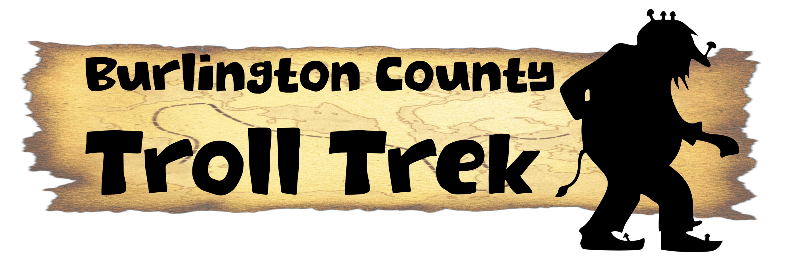

Troll on a Stroll (Nels)
93" x 48" 48"Steel, bicycle parts, fabric, aluminum wire, brass cymbal, bottle caps
Also known by Nels, this champion loves history and pays homage to the days of the Star Bicycle invented in Smithville, NJ in 1880.
Commissioned for Burlington County Parks 2024 group exhibition Troll Trek
Big Rusty by Thomas Dambo